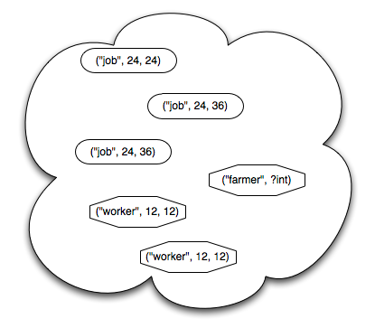

Tuple Spaces (or, Good Ideas Don't Always Win)
I've resisted adding a module on high-performance computing to this course for a lot of reasons: I think other things are more important, there's enough coverage elsewhere, the software is hard for novices to set up... But there's another reason, one that may not be as good, but still has a seat at the table. Deep down, the reason I'm reluctant to teach MPI (the de facto standard for parallel programming) is that there's a much better model out there, one that works on all kinds of hardware, is comprehensible to novices, and delivers good performance on a wide range of problems. Its name is tuple space, its most famous implementation is Linda, and unfortunately, for a lot of reasons that I still don't understand, it somehow became an "also ran" in parallel programming.
How easy is Linda? The examples in this article, and this well-written little book, are pretty compelling, but since the first is behind a paywall, and the second is out of print, here's a short overview. A tuple space is, as its name suggests, a place where processes can put, read, and take tuples, which are in turn just sequences of values. ("job", 12, 1.23) is a tuple made up of a string, an integer, and a floating-point number; a tuple space can contain zero or more copies of that tuple, or of tuples containing other types of values, simple or complex.
A process puts something in tuple space with put(value, value, ...). It can take something out with take(...), or copy something (leaving the original in tuple space) with copy(...). The arguments to take(...) and copy(...) are either actual values, or variables with specific types; values match themselves, while types match things of that type. For example:
- put("job", 12, 1.23) puts the tuple ("job", 12, 1.23) in the tuple space
- if f is a floating point variable, take("job", 12, ?f) takes that tuple out of tuple space, assigning 1.23 to f
- but take("job", 15, ?f) blocks, because there is no tuple in tuple space matching the pattern (12 doesn't match 15)
- and if i is an integer variable, copy("job", ?i, ?f) assigns 12 to i and 1.23 to f, but leaves the tuple in tuple space.
There are non-blocking versions of take(...) and copy(...) called try_take and try_copy (the names vary from implementation to implementation) that either match right away and return true, assigning values to variables in their patterns, or fail to match, don't do any assignment, and return false. There is also eval(...), which takes a function and some arguments as parameters and creates a new process. Whatever (tuple of) values that function returns when it finishes executing is then put in tuple space—this is how one initial process can spawn many others.

And that's it. That's the whole thing. It's easy, easy, easy for beginners to understand—much easier than MPI. And compile-time analysis of tuple in/out patterns can make it run efficiently in most cases; adhering to some simple patterns can help too. But for a whole bunch of reasons, it never really took off: not as a language extension to C, not as JavaSpaces, not in various homebrew implementations for agile languages like Python, and that makes me sad. It's as if the metric system had failed, and we had to do physics with foot-acres and what-not. But I guess that's the world we live in...
Originally posted 2011-03-01 by Greg Wilson in Opinion.
comments powered by Disqus